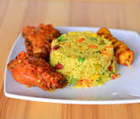

My Best Food
My best meal is fried plantains,fried rice and stew,with crispy fried chicken and fried potatoes
Ingredients Of My Best Meal
- Rice
- Tomatoes
- Plantains
- Chicken
- Potatoes
How To Prepare My Best Meal
- Boil water,wash your rice and put in the put to cook.
- Slice your plantains,and fry with groundnt oil.
- Steam your chicken,and after that,fry in groundnut oil.
- Slice your potatoes,and fry in groundnut oil.
- Serve the dish hot,with a glass of cocktail.

How to make fried rice and chicken